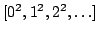

libaldor provides some standard linear
data structures having very similar functionalities:
List T and CheckingList T
both provide linked lists
whose entries are of type T, while
Array T and CheckingArray T both provide
arrays whose entries are of type T.
Lower-level linear data structures are PrimitiveArray T
and PackedPrimitiveArray T,
which provide simpler arrays whose entries are of type T.
All of those data structures can be created by explicitly listing a
finite number of elements, for example
The general form for iterating efficiently over a
BoundedFiniteLinearStructureType is
There are classical tradeoffs between the various array types: the only difference between CheckingArray and Array is that CheckingArray checks whether the index is within the range of the array, while Array does not. Similarly, CheckingList checks whether a list is empty before calling first and rest, while List does not. Since both pairs of types offer the same exports, you can use one during the development and testing phase, and then switch to the other for releasing your code. An advantage of the lower-level arrays of category PrimitiveArrayType is that they are compatible with C pointers and generate more efficient code when accessing their elements. In order to benefit from the advantages of all those types, libaldor provides the data function, which returns the data of an Array or CheckingArray as a PrimitiveArray without copying or allocating memory. It is thus possible to use Array or CheckingArray in your code, making sure to apply data to it before accessing elements in a loop. For example, the following function efficiently computes the sum of all the elements with even indices of an array of machine integers:
evenSum(a:Array MachineInteger):MachineInteger == {
import from MachineInteger; -- for the index i
import from PrimitiveArray MachineInteger;-- for accessing the elements of p
p := data a; -- for efficiency (optimized code)
sum:MachineInteger := 0;
for i in 0..#a by 2 repeat sum := sum + p.i;
sum;
}
Conversely, the function array
creates an Array or CheckingArray
from a PrimitiveArray without copying.
Note that the
generator functions
in Array and CheckingArray use the data
function, so iterating an Array or CheckingArray a via
Since String has the category
ArrayType Character,
all the array functionalities
are also applicable to strings. For example,
For types whose elements are not word-size, such as Byte, Character, SingleFloat and DoubleFloat, you can use PackedPrimitiveArray as a packed alternative to PrimitiveArray, which is then compatible with the corresponding C-arrays (see Table 1).
The type Stream T,
of category LinearStructureType T,
provides infinite linear structures.
There are several ways to create streams, the easier ones being via an
unbounded iterator, or via a function that computes its
 element.
For example,
element.
For example,
import from MachineInteger, Stream MachineInteger;
sqr1 := [n^2 for n in 0..];
sqr2 := stream(0, (n:MachineInteger):MachineInteger +-> n^2);
are two different ways to create the infinite stream
.
Streams can be iterated, yielding loops whose duration cannot be predicted
in advance, so using a parallel finite iterator or a termination condition
inside the loop is advisable. Finally, streams are lazy in that
libaldor also provides different table stuctures:
hash tables are provided by the HashTable type and are created
via the table function, as in
Finally, libaldor also provides more specialized data structures documented in the reference section: Set, SortedSet, SortedList and Queue.